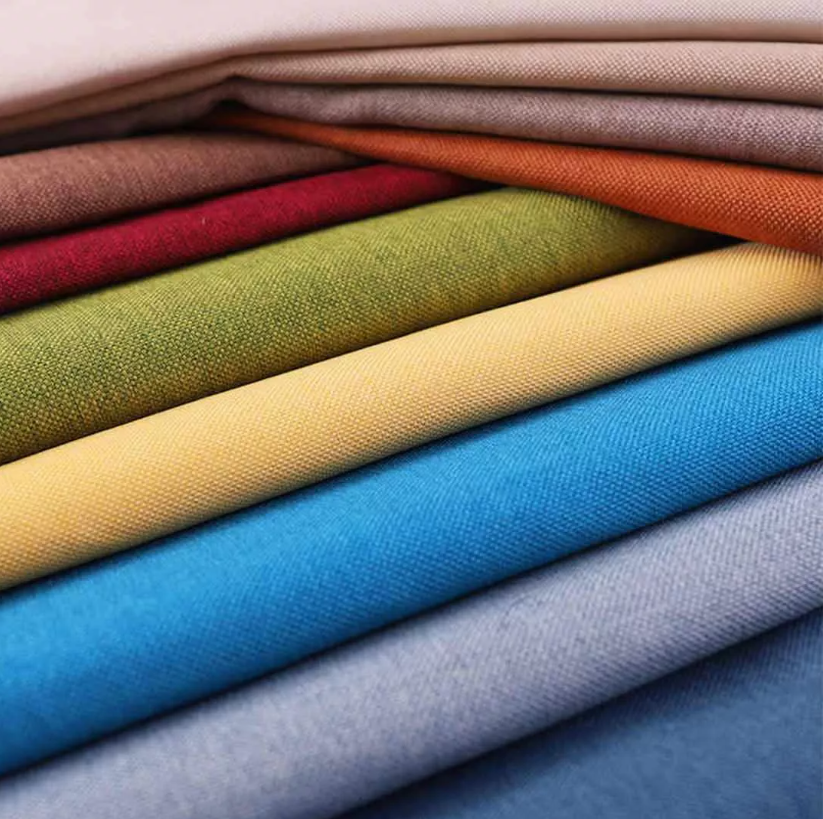

Ürünlerimiz

Airfile Kumaş

Alcantara Kumaş

Welsoft Kumaş
Airfile Kumaş
Alcantara Kumaş
Welsoft Kumaş
OMY Ticaret; kaliteli ürün yelpazesi ve hızlı tedarik zinciriyle, müşterilerinin ihtiyaçlarına özel çözümler sunan güvenilir bir iş ortağıdır.
İlk günden bu yana, gelişmelerle kendini sürekli yenileyen firmamız, yılların verdiği tecrübe ve uzman kadrosuyla kumaş alanında fark yaratmaktadır.
Ürünlerimiz, kalite, estetik ve dayanıklılığı bir arada sunma amacıyla, özenle seçilmekte; siz müşterilerimizin ihtiyacı olan ürünü en kısa sürede, en doğru şekilde temin edebilmek için hem üretim hem de lojistik süreçlerinde etkin çözümler geliştirmekteyiz.
OMY Ticaret olarak sadece mal alım-satımı değil; güven, istikrar ve memnuniyet inşa etme amacıyla yola çıkıyoruz.
OMY Ticaret olarak, sadece kumaş değil; kalite, hız ve güven sunuyoruz.
Sipariş, Soru ve Önerileriniz için bize ulaşın.